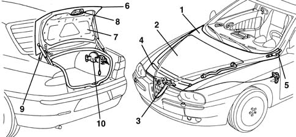

Introduction - COMPARTMENT LIDS
- Path
- Descriptions > 70 FITTINGS > 7025 COMPARTMENT LIDS > Introduction - COMPARTMENT LIDS
- Kind
- system description
- Applies to
- all engines; all production periods
- Interactive page
- https://sloeber94.github.io/elrnDB-a156/en/#/3239239
Applies to: all engines; all production periods
VIEW OF ASSEMBLY
The figure shows the entire subassembly.

1, Bonnet lid 2, Trim 3, Lock unit 4, Weather strip 5, Hinge 6, Boot lid 7, Trim 8, Lock 9, Hinge 10, Fuel filler flap
BONNET LID
The bonnet lid is one of the features that gives the car its distinctive shape. It incorporates the big Alfa Romeo shield at the front.
The operation and locking are ensured by means of a single central locking assembly.
The control system operates with a bowden cable.
BOOT LID
The boot lid is fully lined and is supported by telescopic dampers with gas springs.
The rear band houses the inner light clusters containing the reversing and rear fog lights.
Control is also via a lever located near the driver's seat. This operates a bowden cable to open and close the lock (which can also be operated from the outside with the vehicle key).
FUEL FILLER FLAP
It too is operated by a button near the boot lid button.
There is an emergency control which can be operated from the boot.